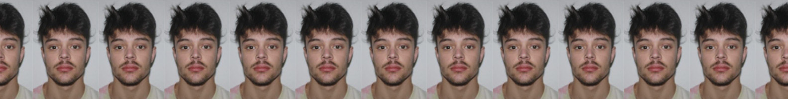

ROGER ESTURI FEBRER
12/05/1999, Vic
C/Major, 24, 08505
630758478
rugiestu@gmail.com
FORMACIÓ REGLADA
·Educació Secundària Obligatòria.
·Batxillerat Artístic, Plàstic.
·Cursant Grau Superior d’Animacions 3D, Jocs i Entorns Interactius. UVic 2017-2020.
EXPERIÈNCIA PROFESSIONAL
2015-actualment Auxiliar de cuina. Empresa Rostisseria Arc de Sant Martí. Vic.
Funcions:
·Atenció directa al client i atenció telefònica.
·Ajudant de cuina.
IDIOMES
Català: Llengua materna.
Castellà: Nivell alt.
Anglès: Nivell First.
·2015. Títol PET, ESOL International, Barcelona.
INFORMÀTICA
·Domini del paquet Office i d’Internet.
·Domini del paquet Adobe, programes gràfics i de disseny.